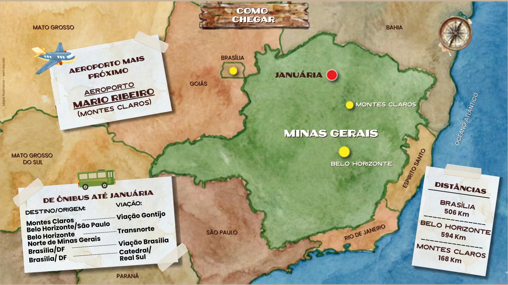

Como chegar em Januária
Januária, esta joia do Norte de Minas Gerais, está localizada a 168 km de Montes Claros/MG, 506 km de Brasília/DF, 594 km de Belo Horizonte/MG e 1.160 km de São Paulo/SP. Calma, não se assuste com as distâncias, o acesso à Januária é facilitado pela BR-135, linhas de ônibus e também por via aérea de cidade próxima. Cada quilômetro percorrido para chegar até aqui será recompensado.
Vindo de carro
- Partindo de Montes Claros/MG: você irá percorrer 168 km na BR-135 em um tempo médio de 2 horas e 30 minutos.
- Partindo de Brasília/DF: o trajeto mais seguro é vir pela BR-040, BR-365 e BR-135, passando por Montes Claros/MG, onde você irá percorrer 868 km em um tempo médio de 11 horas. Existe um caminho alternativo via BR-479 com apenas 506 km de distância, entretanto, o trecho entre Chapada Gaúcha e Januária, com 175 km, não está integralmente pavimentado e não apresenta boas condições.
- Partindo de Belo Horizonte/MG: você irá percorrer 594 km via BR-040 e BR-135 em um tempo médio de 7 horas.
- Partindo de São Paulo/SP: o caminho mais rápido é via BR-381, BR-040 e BR-135 em um tempo médio de 14 horas, percorrendo 1.154 km.
Vindo de avião
Atualmente, o aeroporto de Januária não recebe voos comerciais regulares. A melhor alternativa para quem vem de longe é desembarcar no Aeroporto de Montes Claros (MOC), que conta com ótima infraestrutura e recebe voos diários das principais capitais do Brasil.
Confira as principais rotas aéreas até Montes Claros:
- São Paulo (Guarulhos/Congonhas) → Montes Claros: voos operados pela LATAM e GOL.
- Campinas (Viracopos) → Montes Claros: voos operados pela AZUL.
- Belo Horizonte (Confins) → Montes Claros: voos operados pela AZUL e LATAM.
- Brasília → Montes Claros: voos operados pela LATAM e AZUL.
Chegando em Montes Claros, é muito simples seguir viagem até Januária. Você pode alugar um carro no próprio aeroporto, pegar um táxi ou utilizar os ônibus.
Vindo de ônibus (linhas sem conexão)
- Partindo de Montes Claros/MG: diariamente pela Transnorte, com saídas às 6:00, exceto domingo, 10:00 e 18:00.
- Partindo de Brasília/DF: diariamente pela Catedral, com saída às 19:00.
- Partindo de Belo Horizonte/MG: diariamente pela Gontijo, com saída às 21:00.
- Partindo de São Paulo/SP: diariamente, exceto às segundas e sextas-feiras, pela Gontijo, com saída às 15:00.
Busque sua rota para Januária
Sua cidade: